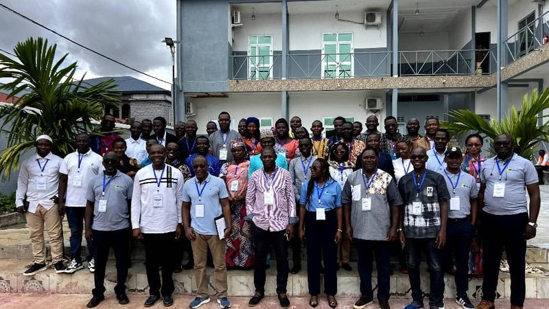
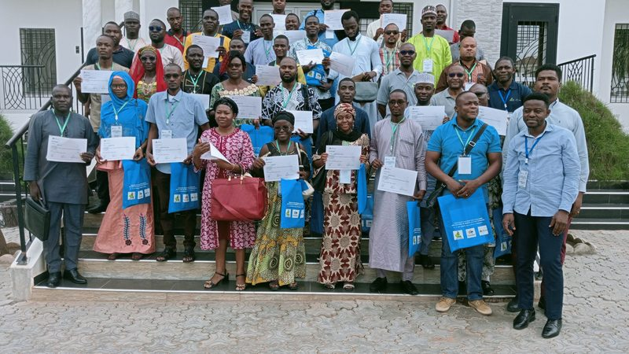
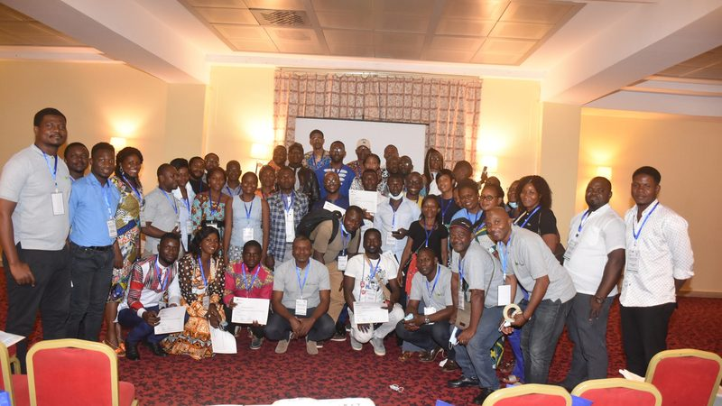

Documents et programmes
Fiches de prise en charge, photographies d’évènements, programmes et affiches au format PDF, et réponses aux questions pratiques.
Fiches de prise en charge
À notre site de soins : diagnostic et séance d’IEC, devis détaillé suivant notre tarifaire social, traitement, suivi de l’évolution de la guérison.
Cas et évènements en images
Chaque évènement de la galerie photo présente les enseignants, les participants et les travaux pratiques des cours et séminaires de l’AO Cameroun.

Cours AOA non opératoire, Ngaoundéré
Du 08 au 10 octobre 2024 : les enseignants, les participants, exercice pratique, groupe de discussion, travaux pratiques et photo de famille.

Cours AOA non opératoire, Garoua
Du 17 au 19 septembre 2023 : groupe de travaux pratiques, un enseignant AO Alliance et photo de famille.

Cours AOA non opératoire, Douala
Du 07 au 09 avril 2022 : les enseignants, un enseignant, photo de famille et travaux pratiques.
Documents PDF
Programmes des cours et séminaires, affiche et détails du projet de prise en charge des fractures ouvertes.
Questions fréquentes
Cours non opératoire : personnel médical des services d’accueil et des urgences et étudiants de médecine en fin de formation. Cours opératoire : médecins généralistes, résidents de chirurgie et chirurgiens. Séminaires PBO : personnels du bloc opératoire. Séminaires IEC : agents de santé communautaire, communicateurs sociaux et personnalités ressources.
Depuis la page de l’évènement, bouton « Inscription » : le formulaire est hébergé sur events.ao-alliance.org. Quand les inscriptions sont closes, la page l’indique. Contact : contact@ao-cameroun.org.
Au site central des soins, Fondation Médicale André Fouda, Quartier Fouda en face de l’ISTAG : consultations les lundi, mercredi et vendredi de 9 h à 13 h. Consultation initiale 8 000 FCFA, de suivi 5 000 FCFA (ticket valable 15 jours), d’urgence 10 000 FCFA.
Par courriel à contact@ao-cameroun.org, par téléphone au 699 59 19 18, 679 50 92 70 ou 653 16 07 32, ou par courrier : BP 3398 Messa, Yaoundé-Cameroun.